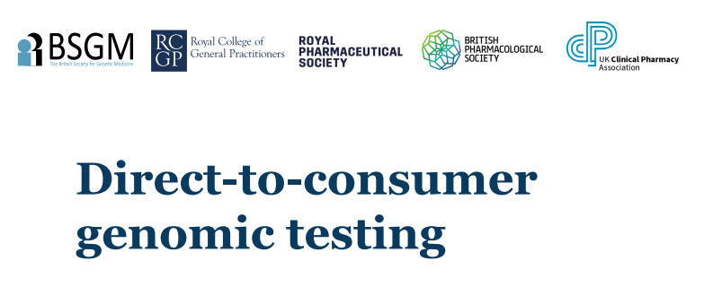
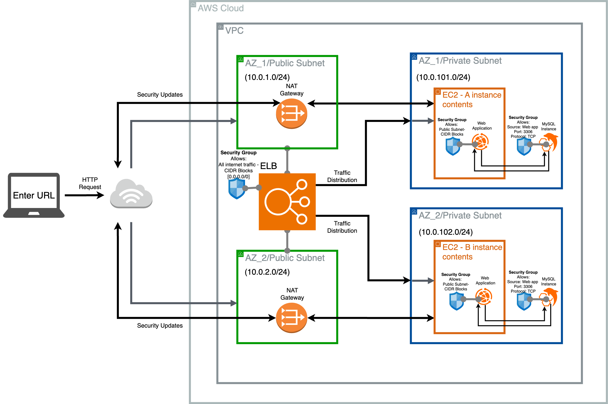
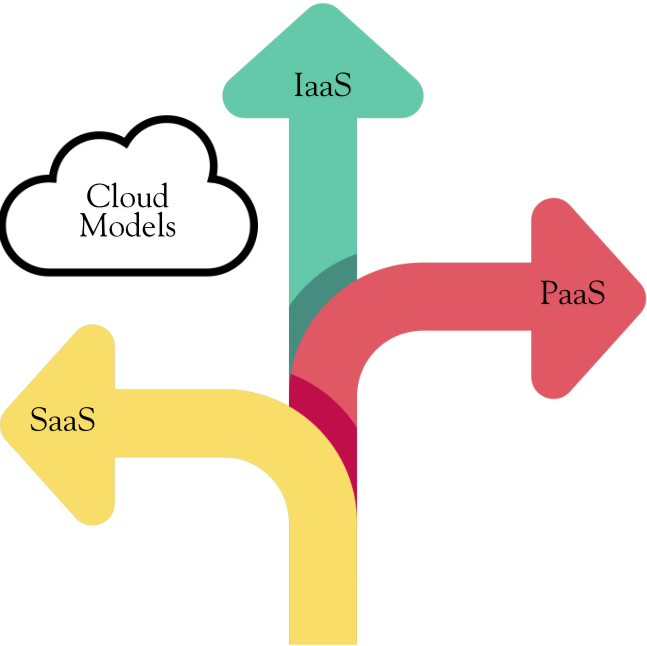
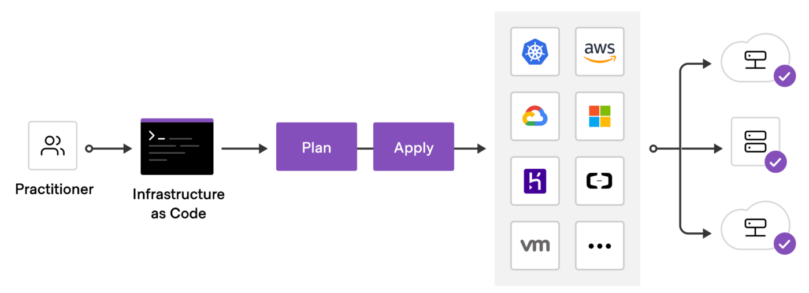
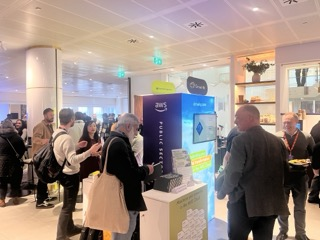
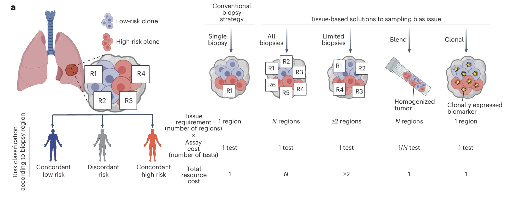
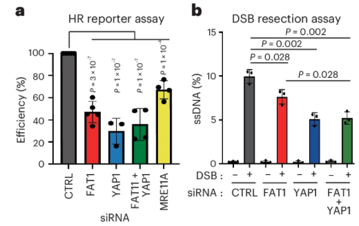
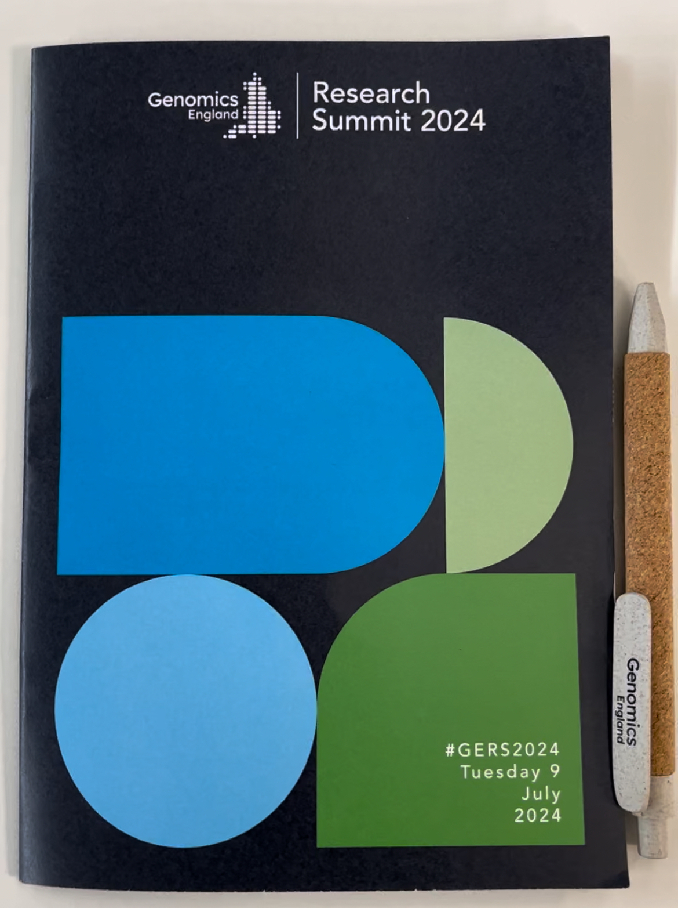
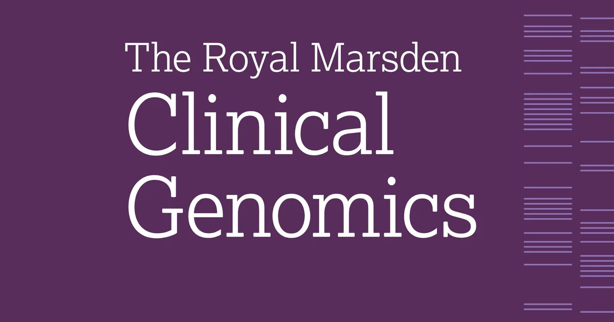

Guidance for clinicians & clinical scientists in handling the results of commercial genomic tests
14/10/2025 - The British Society for Genetic Medicine has published a position statement recommending how NHS clinicians and clinical scientists (e.g. consultant geneticists & genetic counsellors) should handle the results of commercially available genetic tests. Worth a look.
#testing #genomics #guidance

I've been immersing myself in understanding Cloud fundamentals and AWS services!
29/03/2025 - I've been burning the midnight candle studying the fundamentals of cloud technology and AWS services as well as designing and then building infrastructure using Terraform. I've supplemented the content provided by AWS Educate with courses provided by Pluralsight and I think it's been a great combination.
I think I've been going at it for about 59 days so far! And I've definitely learnt a great deal, but there's so much more to learn and do!
#cloud #aws #awsservices #upskilling #career #tech

I decided to provision a MySQL database in my Web App cloud infrastructure
21/03/2025 - I updated my Web App cloud infrastructure with a MySQL database to store data in an organised manner. I also added a suitable security group for the database to ensure appropriate access. For more details check out the repo for Project 8 in the readme: GitHub
#cloud #aws #architecting #terraform #upskilling #career #tech

The 3 Main Cloud Models
19/03/2025 - Check out my blog post on the types of cloud models available, they're important to know in the case of organisations thinking of migrating IT resources to the cloud and individuals looking to work in the cloud industry.
#cloud #aws #architecting #terraform #upskilling #career #tech

I Designed and built highly available cloud infrastructure to host a web app using Infrastructure as Code
15/03/2025 - I'm quite enjoying the process of provisioning cloud infrastructure, the image above is a design for highly available cloud infrastructure to host web app. It uses EC2s, an ELB and a NAT gateway. And all of course with appropriate security groups. I'm getting more acquainted with the various features of Terraform for setting up infrastructure. For more details check out the repo: GitHub
#cloud #aws #architecting #terraform #upskilling #career #tech

Join me on my cloud journey!
09/03/2025 - I've recently taken great interest in cloud technology. Over the course of my career so far as a bioinformatician I've picked up knowledge like networking and how the internet works as well as skills in IT like using command line in Linux, coding in Bash, Python or R, using version control and CI/CD. Many of these skills are readily applicable to cloud technology, and they're being required in my work place and in my field in general. I've taken it upon myself to master AWS Cloud services and to be able architect solutions as well as provision solutions using Infrastructure as Code (IaC) with a particular focus here on mastering Hashicorp Configuration Language (HCL) Terraform. My goal to be able to build cloud solutions with great emphasis on security to implement zero trust architecture whereby every individual or device that interacts with my system is subjected to authentication and verification to ensure that only those permitted have access to the data in the system. You can check out my IaC projects here: https://github.com/DolapoA/cloud_projects.git I'll be constrcuting some absolutely epic architectures!
#cloud #aws #conference #upskilling #career #tech

AWS Public Sector Day 2025
27/02/2025 - This conference is definitely going to be a staple conference to attend as a bioinformatician or IT/Tech professional working in the public sector. Cloud solutions are more and more necessary as the sheer amount of data being churned out in bioinformatics increases. Short read technology like Illumina's latest sequencer, NovaSeqX and third generation long read sequencing technology like Oxford Nanopore, mean that cloud becomes the go to IT solution for analysing these large datasets and storing it. AWS lead the pack as the biggest cloud service platform constantly advancing the field with new services. As companies and organisations adopt AWS it goes without saying that keeping abreast of best practice in cloud architecture and security becomes a neccessity.
#cloud #aws

A new bioinformatics biomarker for stage 1 lung cancer patients that has prognostic power and which could influence treatment
13/01/2025 - Another piece of work emerging from the TRACERx (TRAcking Cancer Evolution through therapy/Rx) Clinical Study. This work demonstrates the power of bioinformatics to contribute positively to patient healthcare. ORACLE is the name of the biomarker which has been discovered through extensive bioinformatic analysis and which helps to identify high risk stage 1 lung cancer patients that would otherwise have not been identified as such: Link
#ResearchPaper #biomarker

Interesting findings made about Homologous Recombination Deficiency (HRD)
30/12/2024 - Recent research in the TRACERx (TRAcking Cancer Evolution through therapy/Rx) Clinical Study has found that a selection of genes, FAT1 in particular, are strongly associated with HRD and Chromosomal Instability (CIN). It will be interesting to know whether this is exclusive to Non-Small Cell Lung Cancer (NSCLC) or whether it is a Pancancer phenomenon: Link
#ResearchPaper

Genomics England Research Summit 2024
09/07/2024 - A must for anybody working in the field of clinical genomics! By attending you can get a sense of the direction of the field, with England, UK playing a major role as a nation in genomics and biotech, and Genomics England very much an organisation spearheading especially with their pivotal work in the completion of the 100K Genome Project.
Look out for more events held by Genomics England here: Link
#Conference

Starting the Scientist Training Programme September 2022!
09/2022 - I'm looking forward to the various rotations in the first year like the Genomics of Rare and Heritable Disorders at Great Ormond Street Hospital and Genomic Counselling at Northwick Park, this is a fantastic opportunity to develop as a bioinformatician in clinical genomics. God willing, I'll make the most of it!
#Career #STP
Insightful article about early career choices for Clinical Scientists
30/10/2021 - I came across this article detailing results from a survey of Clinical Scientists about the kinds of choices they made early in their career and why. It definitely worth a read for anyone interested in pursuing the STP or anyone already on the programme: Link
#Career
{kind=link}
{kind=link}